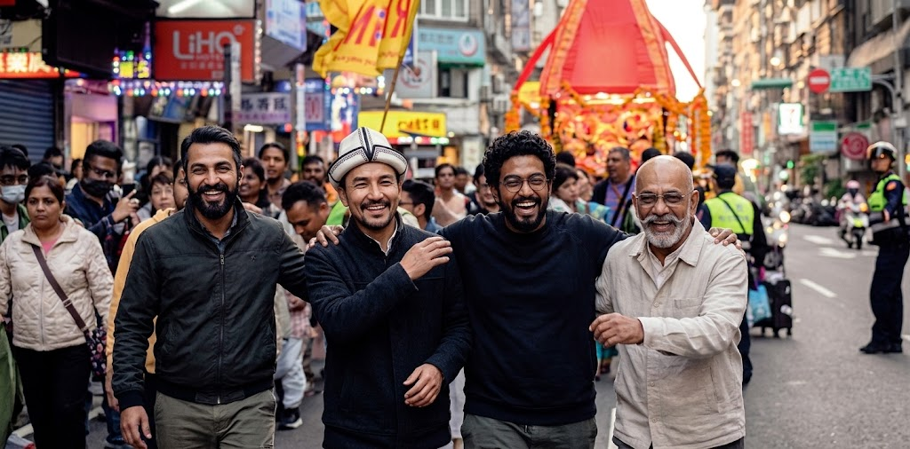
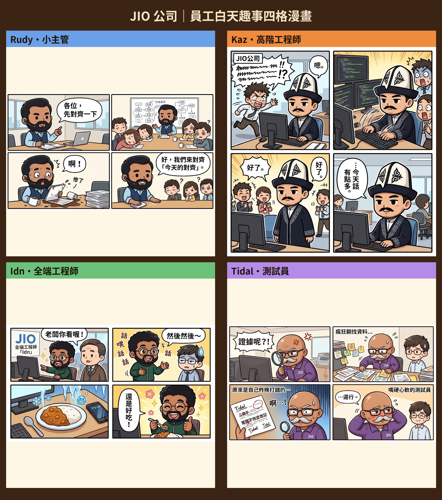

4位核心成員
3類主力服務
1 對 1專人窗口
每週固定回報進度
工坊日常
寫程式之外的我們：對齊會議、鍵盤聲、咖哩飯，還有挑錯字的放大鏡。

辦公室小劇場

公司簡介
JIO 軟體工坊是一間以台灣為據點的小型軟體外包團隊。名字來自我們的標誌：一盞小油燈、一個曼陀羅圈，象徵「把一件事點亮、再一圈圈做圓滿」。
我們做什麼
企業形象網站、內部管理後台、預約／訂單系統、小型行動 App，以及既有系統的改版與維護。
我們的做法
先對齊、再開工、邊做邊給你看。每個案子配一位專人窗口，進度與問題用白話說清楚，不丟術語嚇人。
我們的堅持
上線前一定有人專門挑錯。寧可晚一天交、也不交一份自己看了會皺眉的成品。
工坊歷程
起點 四個人、一間小辦公室、一份共同的咖哩外送清單，JIO 開張。
第一批客戶 從小店家的預約網站開始，慢慢接到企業內部系統。
建立流程 Rudy 把「先對齊」寫成流程，Tidal 把「挑錯」變成上線前的必經關卡。
現在 維持小而精：同時只接少數案子，確保每一件都顧得到。
※ 以上為示範文案，可依實際公司資料替換。
成員介紹
點選成員查看「角色卡」：可切換心情、查看個人資料、同事關係與列傳。
公司組織圖
編制精簡，溝通直達。點選成員節點可跳到對應的角色卡。
老闆方向・客戶最終窗口
Rudy小主管／專案統籌
Kaz高階工程師（後端）
Idn全端工程師
Tidal測試員／品質把關
運作方式
客戶需求 → 老闆接洽 → Rudy 拆解並分工 → Kaz、Idn 開發 → Tidal 驗收 → 交付。
誰是你的窗口
日常進度找 Rudy；技術細節 Idn 會用白話幫你翻譯；上線品質由 Tidal 簽核。
服務與流程
不追流行名詞，只把你要的功能穩穩做出來。
網站設計與建置
形象官網、活動頁、電商小店，手機與電腦都好用。
後台與系統開發
訂單、會員、預約、報表等內部管理系統，資料整理清楚。
測試與維護
上線前完整測試，上線後持續修正、小幅改版。
合作流程
1. 需求對齊 Rudy 與你聊清楚目標、時程與預算。
2. 報價與時程 提供透明的功能清單與分期付款方式。
3. 開發與每週回報 Kaz、Idn 開發，每週讓你看到實際畫面。
4. 測試驗收 Tidal 逐項檢查，問題清單修完才交付。
5. 上線與保固 協助上線，提供一段保固期。
聯絡我們
有想法就來聊聊，不用先想清楚規格，我們幫你一起整理。
聯絡資訊
電子郵件 abulaboyrudy@gmail.com
電話 （02）0000-0000
地址 印度・馬哈拉施特拉邦浦那，Hinjewadi 第一期，Rajiv Gandhi Infotech Park 0 樓（示範地址）
服務時間 週一至週五 09:30–18:00
回覆時間 一個工作天內
※ 聯絡資料為示範占位，上線前請換成真實資訊。